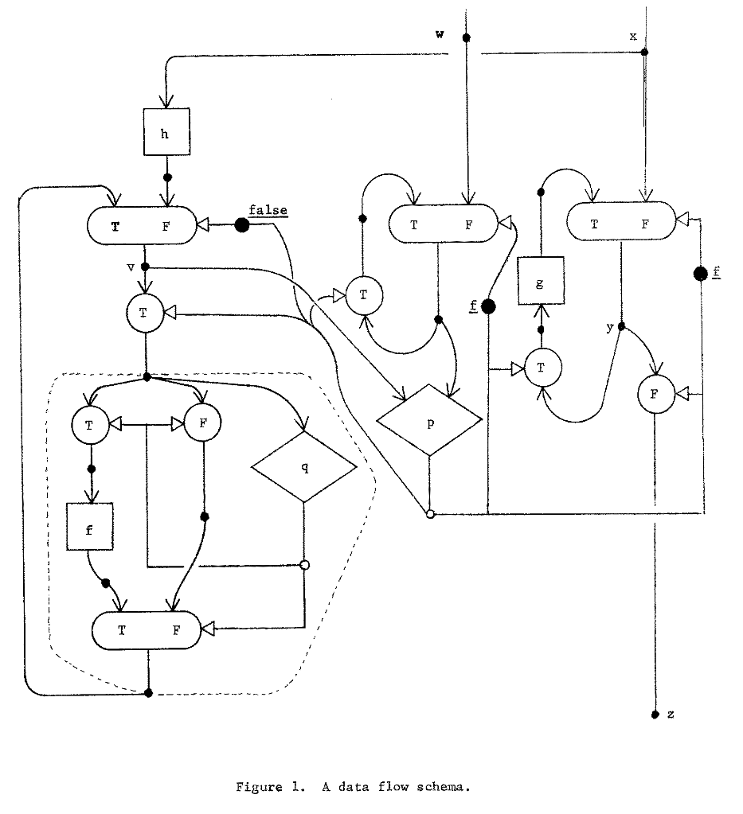
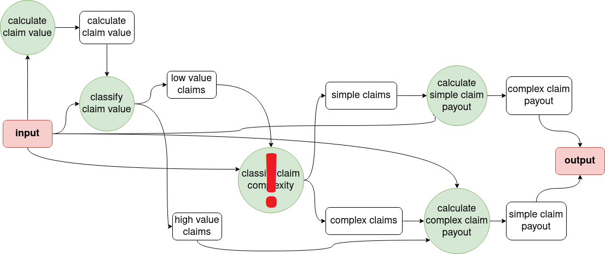
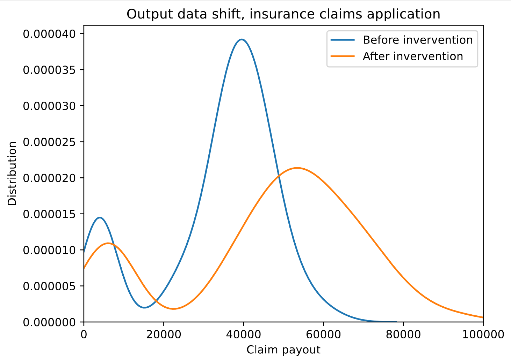
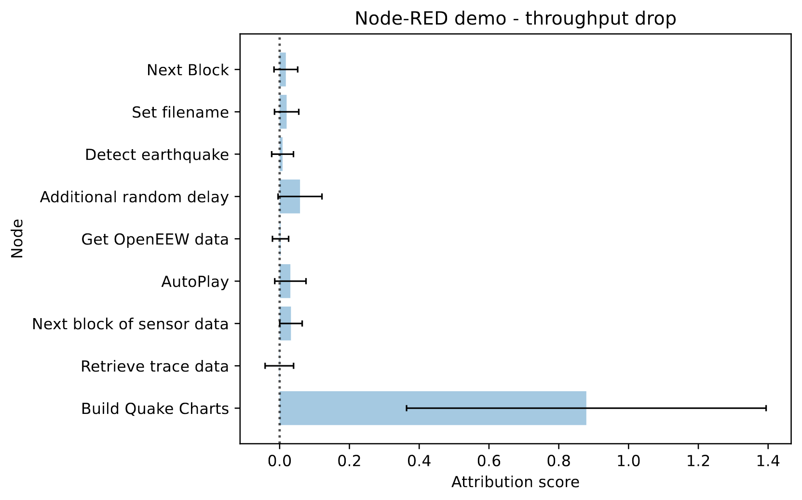

Dataflow graphs as complete causal graphs
Andrei Paleyes, Siyuan Guo, Bernhard Schoelkopf, Neil Lawrence
University of Cambridge
CAIN 2023
What is dataflow architecture?

Data flow schemas, Dennis, J. B., Fosseen, J. B., & Linderman, J. P., International Symposium on Theoretical Programming (pp. 187-216), 1974
“Dataflow graph can be used as complete causal graph, with implications for debugging, business analysis and experimentation.”
"Dataflow graphs as complete causal graphs", Paleyes et al., CAIN 2023
Our goal

Demos and experiments
Demos and experiments

Demos and experiments

Future work
- Scale up graph size
- Estimate data storage costs
- Develop fully automated plugins
- Demos for business analysis and experimentation